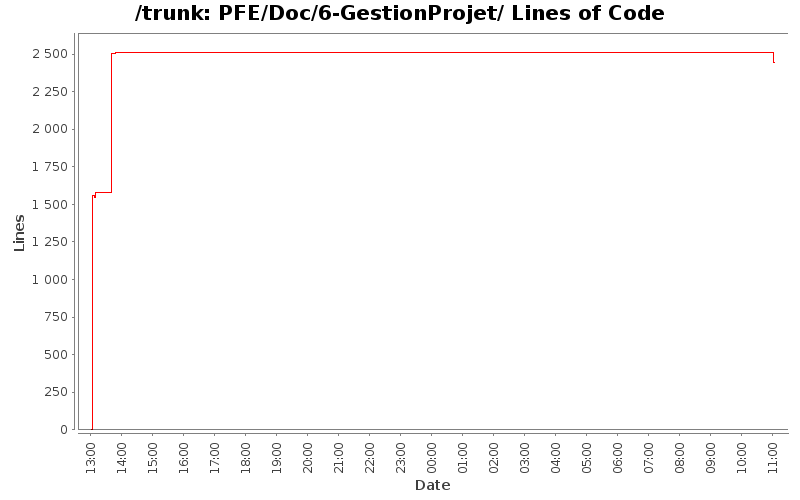

[root]/PFE/Doc/6-GestionProjet

| Author | Changes | Lines of Code | Lines per Change |
|---|---|---|---|
| Totals | 12 (100.0%) | 8904 (100.0%) | 742.0 |
| hoc5783 | 7 (58.3%) | 5008 (56.2%) | 715.4 |
| fab0670312047 | 3 (25.0%) | 1311 (14.7%) | 437.0 |
| mesbahi.jaafar@gmail.com | 1 (8.3%) | 1300 (14.6%) | 1300.0 |
| Abdelali.nait | 1 (8.3%) | 1285 (14.4%) | 1285.0 |
+ MON DERNIER COMMIT POUR LES RAPPORTS !
(Fabien, garde ces documents si tu y tiennes tellement, perso je n'en veux pas :p)
Philippe
1227 lines of code changed in 2 files:
+- Ajout de l'introduction
1285 lines of code changed in 1 file:
+ correction bug
11 lines of code changed in 1 file:
+ Mise en page du rapport.
2222 lines of code changed in 3 files:
-+ Correc-+ Correction du chemin relatif et absolu
1300 lines of code changed in 1 file:
+ Integration du shema de Jaafar
34 lines of code changed in 1 file:
+ Correction sur les outils subversion
1266 lines of code changed in 1 file:
+ Nouveau dossier dédié à la gestion de projet => Rapport à part.
1559 lines of code changed in 2 files: